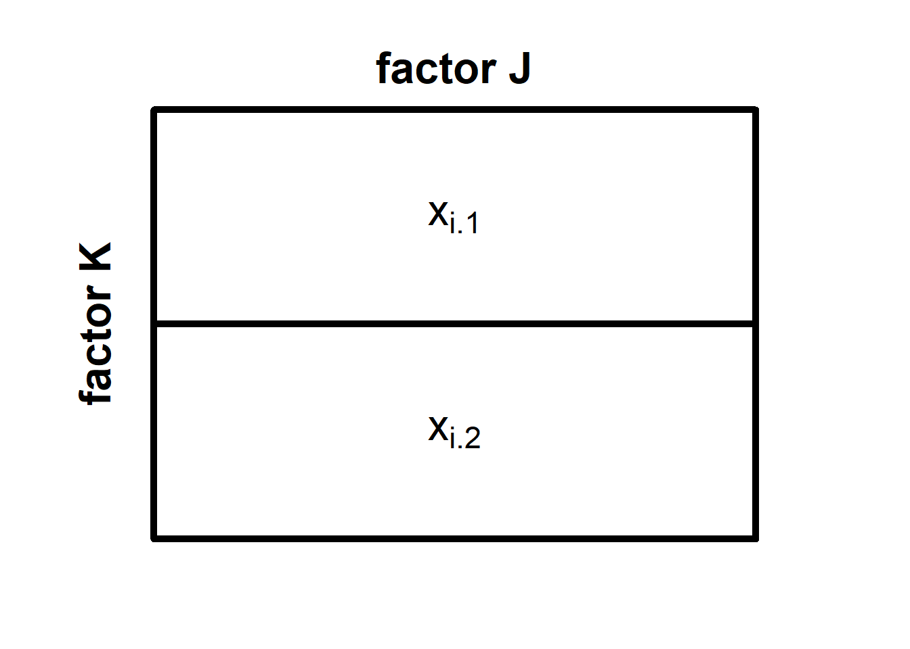

The two-factorial ANOVA
The two-factorial analysis of variance (ANOVA) in an extension of the one-factorial ANOVA. It allows us to test how the mean of a continuous variable differs as a function for two categorical variables \(A\) and \(B\). In a two-factorial ANOVA, we can not only test for the independent effects of the two variables on the outcome, but also a possible interaction of the two variables \(A \times B\). Here, interaction means that the magnitude and/or direction of the effect of one of the variables depends on the level of the second variable.
A two-factorial design requires that the two variables \(A\) and \(B\) are “crossed”. That means that each level of the first factor \(A\) must be combined with each level of the second second factor \(B\). If \(A\) has three levels and \(B\) has two levels, our design has a total of 6 cells, and we would refer to it as a \(3 \times 2\)-design.
If we ensure, in addition, that all cells of our design have the same sample size, we call our design orthogonal. Orthogonality is not required for running a two-factorial ANOVA, but it comes with an advantage: equal sample sizes make the ANOVA robust against violating the assumption of equal variances.
General logic of the two-factorial ANOVA
Just as with the one-factorial ANOVA, its two-factorial cousin partitions the variance of the outcome variable \(\sigma_x^2\) into signal and noise. The signal is the variance that stems from differences between groups, and the noise is the variance that is due to differences within the groups. Here, too, we can simplify the partition of variances by partitioning the sums of squares instead. As with the one-factorial ANOVA, we can state that:
\[SS_{total} = SS_{between} + SS_{within}\]
The difference to the one-factorial ANVOA is that we can now partition the signal (the \(SS_{between}\)) even further. Specifically, we can partition the variability between groups into variability that is due to the first factor \(A\), variability that is due to the second factor \(B\), and variability that results from the interaction of the two factors \(A \times B\). We can state this formally as follows:
\[SS_{between} = SS_A + SS_B + SS_{A \times B}\]
Let’s have a closer look at the sums of squares using a simplest possible example, namely the \(2 \times 2\)-design, in which factor \(A\) has \(J = 2\) levels, and factor \(B\) also has \(K=2\) levels. We can think of this design as a squares divided into four parts (see below):
In each of the four cells of this \(2 \times 2\) design, there are \(n_{jk}\) many observations of the outcome variable \(x\), where \(n_{jk}\) is the sample size in the cell formed by the \(j\)th level of \(A\) and the \(k\)th level of \(B\). We denote individual observations as \(x_{ijk}\), which refers to the \(i\)th observation in the cell formed b the \(j\)th level of \(A\) and the \(k\)th level of \(B\).
When we want to partition the sum of squares in a two-factorial design, we first need to compute the total sum of squares. We do so, by collapsing across all cells of our design and summing the squared deviations of all observations from the grand mean \(\bar{x}\) (i.e., the mean computed across all observations irrespective of which cell they stem from). We can formalise this as:
\[SS_{total} = \sum_{j=1}^{J} \sum_{k=1}^{K} \sum_{i=1}^{n_{jk}} (x_{ijk}-\bar{x})^2\] The next step is computing \(SS_{between}\) by pretending that there is no variance within groups. Computing the \(SS_{between}\) works similar to the one-factorial ANOVA. That means, we replace each observation \(x_{ijk}\) with the mean of its cell \(\bar{x}_{jk}\) before computing the sum of the squared deviations from the grand mean \(\bar{x}_{jk}\).
\[SS_{between} = \sum_{j=1}^{J} \sum_{k=1}^{K} n_{jk} \times (\bar{x}_{jk} - \bar{x})^2\] Computing the \(SS_{within}\) is also similar to the one-factorial ANOVA. We pretend that there is no variation between groups by replacing the grand mean \(\bar{x}\) with the cell means \(\bar{x}_{jk}\) in the formula for the total sum of squares.
\[SS_{within} = \sum_{j=1}^{J} \sum_{k=1}^{K} \sum_{i = 1}^{n_{jk}} (x_{ijk} - \bar{x}_{jk})\] So far, so good. We have now partitioned \(SS_{total}\) into the \(SS_{between}\) and the \(SS_{within}\). However, since we have a \(2 \times 2\)-design, we are not merely interested in whether there is substantial variation between the groups, but also where this variation originates. Thus, we need to partition the sums of squares further.
We first compute \(SS_A\), that is, the variation that is solely due to differences in factor \(A\). We do so by pretending that a) there is no factor \(B\), and b) there is no variation within cells. The latter is necessary because \(SS_A\) is part of \(SS_{between}\). The good thing is that we already know how to do it, namely by replacing individual observations with a mean score. But how do we pretend that there is no factor \(B\)? Effectively, we collapse across all levels of \(B\) and combine them into one big cell for each level of \(A\). Here is what our \(2 \times 2\)-design would look like in our minds now:

We now denote the individual observations as \(x_{ij\cdot}\). The little dot reminds us that there was originally another factor \(B\) across which we have now collapsed the cells of our design. To obtain \(SS_A\), we now need to replace all individual observations with their respective cell means respective cell means \(\bar{x}_{j\cdot}\) and then compute the sum of their squared deviations from the grand mean \(\bar{x}\) .
\[SS_A = \sum_{j=1}^{J} n_{j\cdot}(\bar{x}_{j\cdot}-\bar{x})^2 \] Here, \(n_{j\cdot}\) refers to the number of observations for the \(j\)th level of factor \(A\) (irrespective of the level of factor \(B\)).
We can now compute the \(SS_B\) in a similar fashion, namely by pretending that a) there is no factor \(A\), and b) there is no variation within cells. Our imagined design now looks like this:

We note denote individual observations as \(x_{i\cdot k}\) to emphasize that we do not consider which level of \(A\) an observation stems from. Accordingly, the cell means are now denoted as \(\bar{x}_{\cdot k}\). The \(SS_B\) are formally defined as:
\[SS_B = \sum_{k=1}^{K} n_{\cdot k}(\bar{x}_{\cdot k}-\bar{x})^2 \]
Finally, we need to compute the variability that is due to the interaction of \(A\) and \(B\). The simplest way to do so is to subtract the newly computed \(SS_A\) and \(SS_B\) from \(SS_{between}\):
\(SS_{A \times B} = SS_{between} - SS_A - SS_B\)
If we run a two-factorial ANOVA, we no longer need the \(SS_{between}\) because its parts, \(SS_A\), \(SS_B\), and \(SS_{a \times B}\) contain all the variation between groups. The next step is to test each component of the between-group variation for statistical significance. The logic is similar to that of the one-factorial ANOVA, that is, we test for significant using an \(F\)-statistic.
Since we have three possible sources of between-group variability, we will run three tests: one for the main effect of factor \(A\), one for the main effect of factor \(B\), and one for the interaction effect \(a \times B\). For each of these tests, we need to compute the mean squares of the effect we are interested in and divide it by the \(MS_within\). We can obtain \(MS_A\), \(MS_B\), \(MS_{A \times B}\), and \(MS_within\) by dividing the respective sum of squares by its degrees of freedom (see below).
\[MS_A = \frac{SS_A}{J-1}\] \[MS_B = \frac{SS_B}{K-1}\]
\[MS_{A\times B} = \frac{SS_{A\times B}}{(J-1)(K-1)}\] \[MS_{within} = \frac{SS_{within}}{N-J\times K}\]
The main effect of factor A
Let’s first look at the test for the main effect of \(A\). The \(F\)-statistic looks as follows:
\[\frac{MS_A}{MS_{wihtin}} \sim F_{J-1;N-J\times K}\] We use it to test the following hypotheses:
\(H_{0_A}: \alpha_j = 0 \quad \forall j\)
\(H_{1_A}: \lnot H_{0_A}\)
Here, \(\alpha_j\) is the true effect of the \(j\)th level of \(A\) such that:
\(\mu_{j\cdot} = \mu+\alpha_j\)
In other words, when we add \(\alpha_j\) to the overall population mean \(\mu\) (the true value of \(\bar{x}\)), we obtain the expectancy of the mean for the \(j\)th level of \(A\) (collapsed over all levels of \(B\)).
The main effect of factor B
Regarding the main effect of \(B\), this is what the \(F\)-statistic look:
\[\frac{MS_B}{MS_{wihtin}} \sim F_{K-1;N-J\times K}\] The corresponding hypotheses are:
\(H_{0_B}: \beta_k = 0 \quad \forall k\)
\(H_{1_B}: \lnot H_{0_B}\)
Here, \(\beta_k\) is the true effect of the \(k\)th level of B, which is formally defined such that:
\(\mu_{\cdot k} = \mu + \beta_k\)
This means that adding \(\beta_k\) to the true population mean \(\mu\) will result in the expected mean of the \(k\)th level of factor \(B\) (collapsed across all levels of \(A\)).
The interaction of A and B
The \(F\)-statistic for the interaction effect \(A \times B\) is defined as follows:
\[\frac{MS_{A \times B}}{MS_{wihtin}} \sim F_{(J-1)(K-1);N-J\times K}\]
We use this \(F\)-statistic to test the final hypothesis, which is very similar to the main effect hypotheses:
\(H_{0_{A \times B}}: \gamma_{A \times = 0 \quad \forall j,k}\)
\(H_{1_B}: \lnot H_{0_{A\times B}}\)
Here, \(\gamma_{jk}\) is the effect that combining the \(j\)th level of \(A\) and the \(k\)th level of \(B\) has on the population mean *beyond** the respective main effects \(\alpha_j\) and \(\beta_k\). We define \(\gamma_{A \times B}\) such that:
\[\mu_{jk} = \mu + \alpha_j + \beta_k + \gamma_{jk} = 0\]